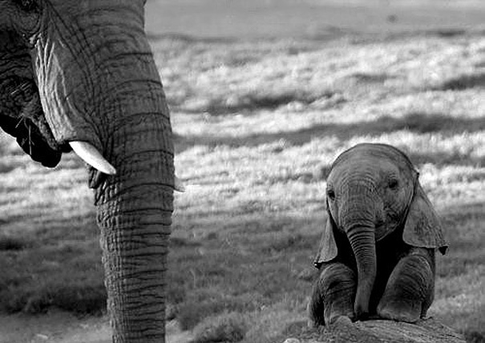
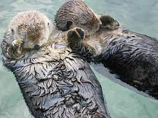

Elefánt
Az elefántok a ma élő legnagyobb szárazföldi állatok, egyben a legtermetesebb szárazföldi emlősök. A legnagyobb ismert elefántot 1974-ben látták Angolában: a hatalmas bika 3,96 méteres marmagasságú volt és 10,4 tonnát nyomott.[1][2] A rekordméretű állatok vemhessége is rekordhosszúságú, mintegy 22 hónapig tart. Az elefántok sokáig élhetnek: akár 70 évnél is tovább. Az elefántagyar olyan specializált, fogzománcot nem, csak dentint tartalmazó metszőfog, amely a táplálék kiásására, mozgatására és harcra szolgál. Számos lelet tanúsítja, hogy az őskori emberek fogyasztottak különféle elefántféléket, az ókor több civilizációjában pedig a hadsereg fő csapásmérő erői voltak. Indiában mindmáig kultikus tisztelet övezi őket. Később kedvelt cirkuszi attrakciók és állatkerti látványosságok, illetve az erőgépek helyettesítői lettek. Közben folyamatosan vadásztak rájuk, elsősorban agyaruk, az elefántcsont miatt, ami számos luxuscikk alapanyaga.
Link az elefánt oldalraZsiráf nyakú bogár
(Trachelophorus giraffa)

Az eszelényfélék, illetve levélsodrófélék közé tartozó Trachelophorus giraffa, amelyet zsiráfnyakú bogárnak nevezünk, különleges tulajdonságokkal rendelkezik. Egyrészt a rovarvilág leghosszabb fejét mondhatja a magáénak: a hímnek 10 milliméter hosszú feje, a teljes testméretükhöz (ami 25 milliméter) képest óriási. Ehhez még hozzá járul egy hét milliméter hosszú nyak is ráadásnak. Mindez a bólogatáshoz szükséges. A bólogatás pedig a küzdelemhez, amelyet a hímek folytatnak a nőstények megszerzéséért. Egyfajta szarvasviadal ez: aki hosszabb nyakával és fejével legyőzi a másikat, az párosodhat az összecsapás végén – legalábbis a madagaszkári zsiráfnyakúak között. A hím ugyancsak hosszú nyaka segítségével göngyöli fel a levelet, hogy tokot készítsen a párja által lerakott egyetlen petének. A nőstényeknek jóval rövidebb a nyakuk. Ezt a különleges fajt, ami igencsak nagy népszerűségnek örvend, 2008- ban fedezték fel, nem sok információ van még róla. A tudósok szerint nem veszélyeztetett. Étkezését tekintve ínyencnek mondható, csak két fa levelét hajlandó fogyasztani a Dichaetanthera cordifolia és Dichaetanthera arborea amelyeken érthetően a legtöbb időt töltik.
Link az bogár oldalraVidra
Az európai vidra, vagy gyakran csak röviden vidra (Lutra lutra) részben vízben élő ragadozó emlősállat. A szabad természetben ritkán lehet látni, mert a Kárpát-medencében szinte kizárólag éjszakai életet él. Az ujjai közötti úszóhártyák és áramvonalas teste egyaránt a gyors úszást segíti elő. Testtömege: 3–14 kg. Testhossza: 46–82 cm. Nyugat-Európától Északkelet-Szibériáig és Koreáig, Kis-Ázsiában, a Himalája régiójában, Dél-Indiában, Kínában, Japánban, Indokínában, Szumátrán, Jáván és Északnyugat-Afrikában él. Általában az édesvizek környékén él, Nyugat-Európában és Skandináviában a tengeröblökben, Dél- Délkelet-Ázsiában a mangrove-mocsarakban, a bizonytalan helyzetű közel-keleti állomány (fél)sós mocsarakban is megtalálható.
Link az vidra oldalra